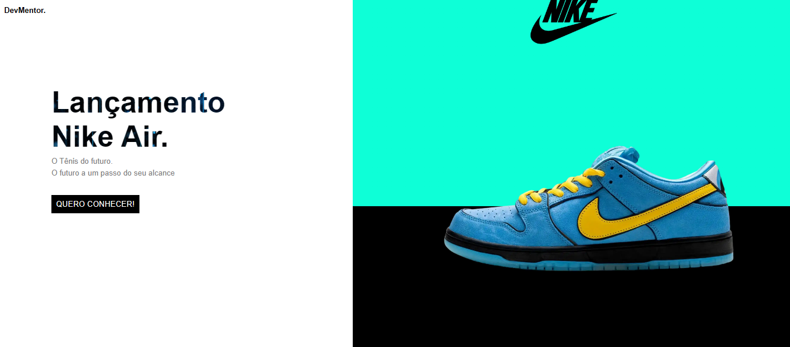

DesenvolvedorLucas gabriel
Desenvolvedor front-end
Bem vindo ao meu portifolio , aqui você
vai saber um pouco sobre mim e projetos desenvolvido por mim
Sobre mim
Sou Lucas Gabriel, de 17 anos, um jovem que se interessa pelo mundo da tecnologia.Busco trabalho e conhecimento na área de programação , dedicando-se ao aprendizado de diversas linguagens e tecnologias . Atualmente, eu tenho o conhecimento em JavaScript, PHP,Python, HTML e CSS, habilidades que eu adquiri por meio de estudos e projetos pessoais , em especifico Python é uma linguagem que aprendi recentimente , buscando expandir meu conhecimento e com o objetivo de se tornar um programador profissional. Determinado e focado nessa carreira, sempre busco novas oportunidades para aprender e crescer no campo da tecnologia.
Projetos
Projeto que foi desenvolvido quando eu estava começando na programação. Achei ele em uma plataforma de desafios, então decidi reproduzi-lo para me auto desafiar, se eu conseguiria
desenvolvido com:html e css
Projeto desenvolvido ainda quando eu estava no começo da programação. Porém, diferente do outro, esse foi eu que pensei e desenvolvi. Como não tinha muito conhecimento, ficou ruim na parte de responsividade e design.
desenvolvido com:html e css
.png)